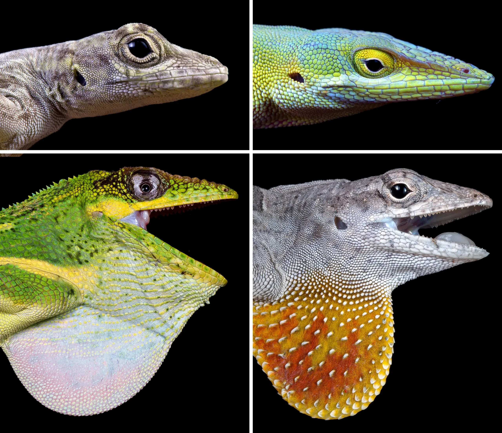
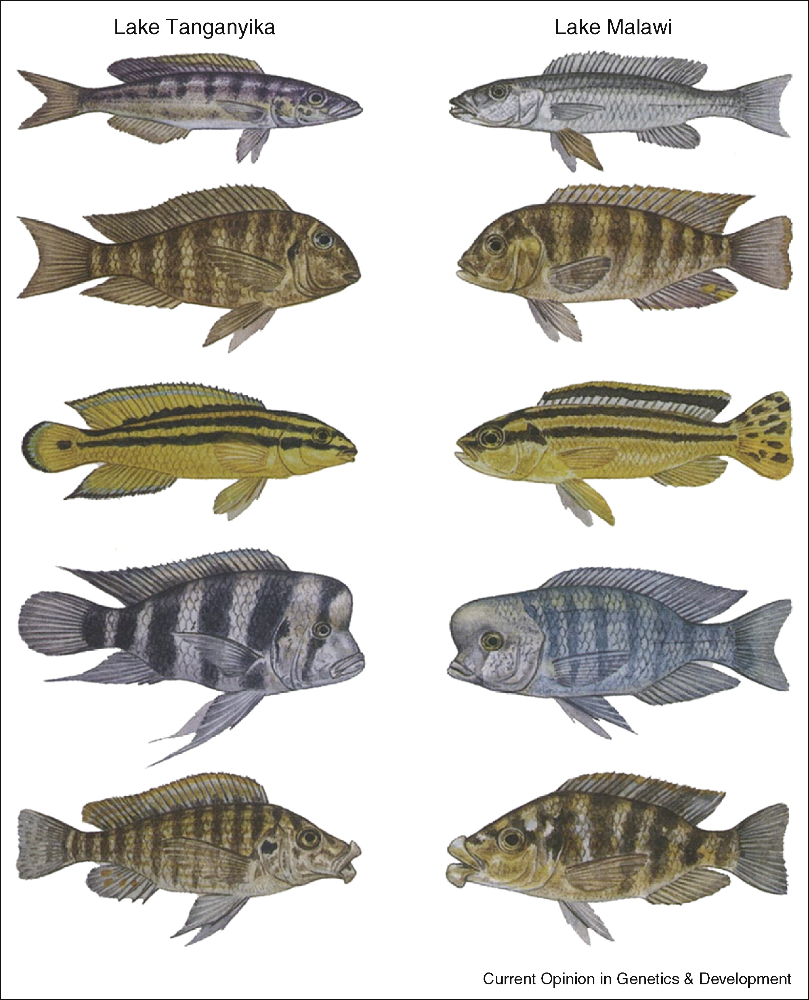
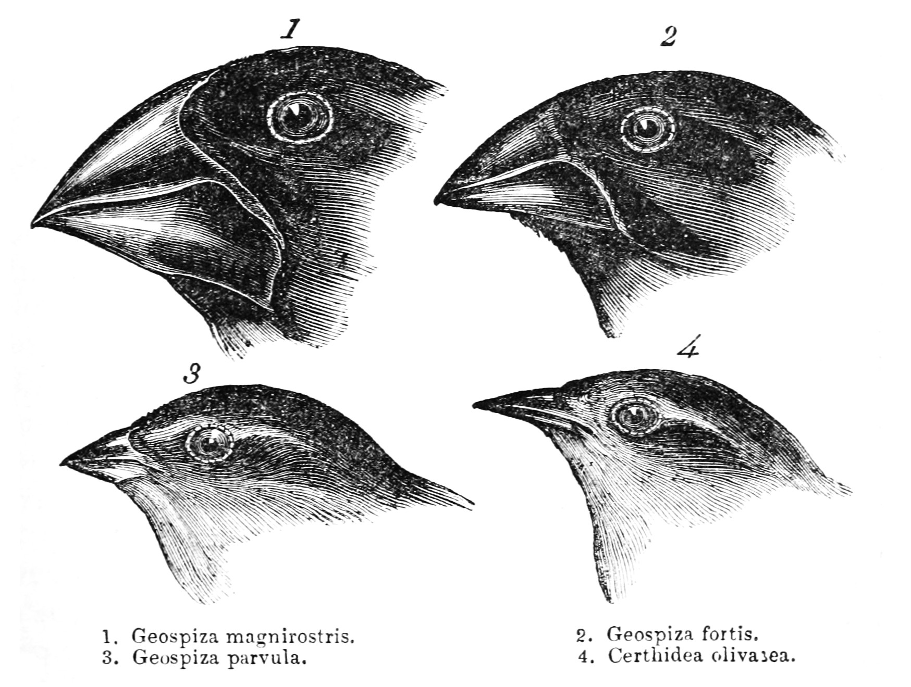
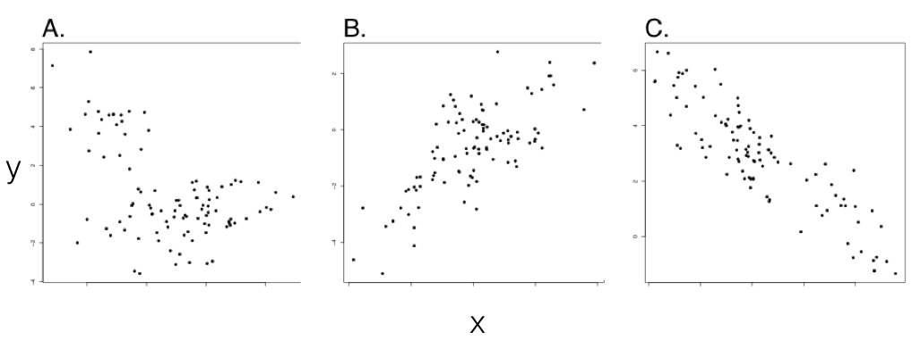
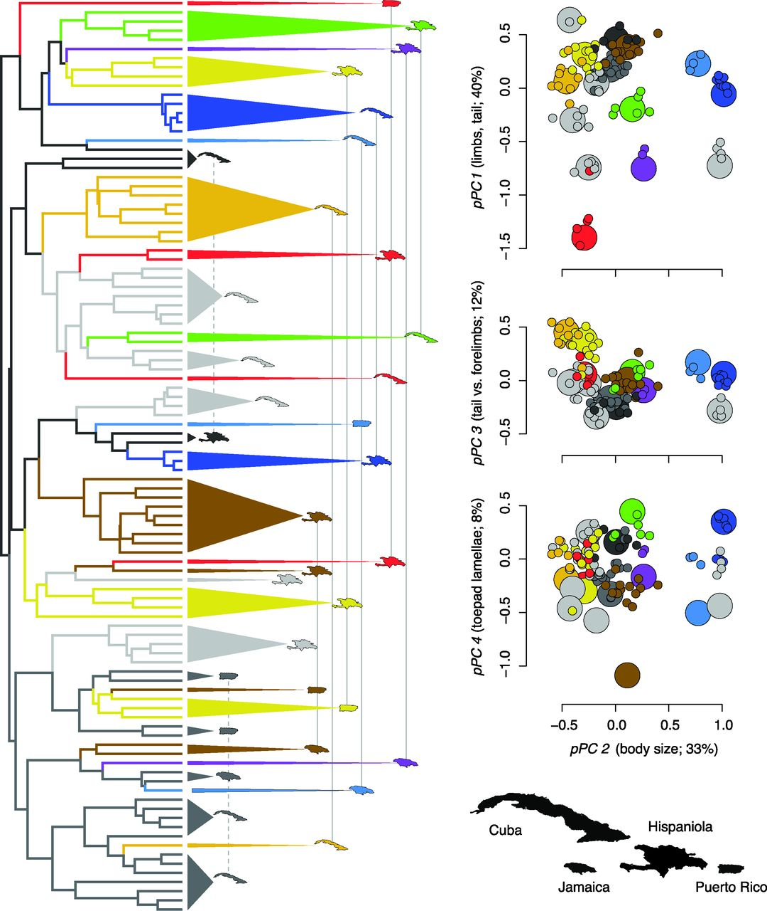
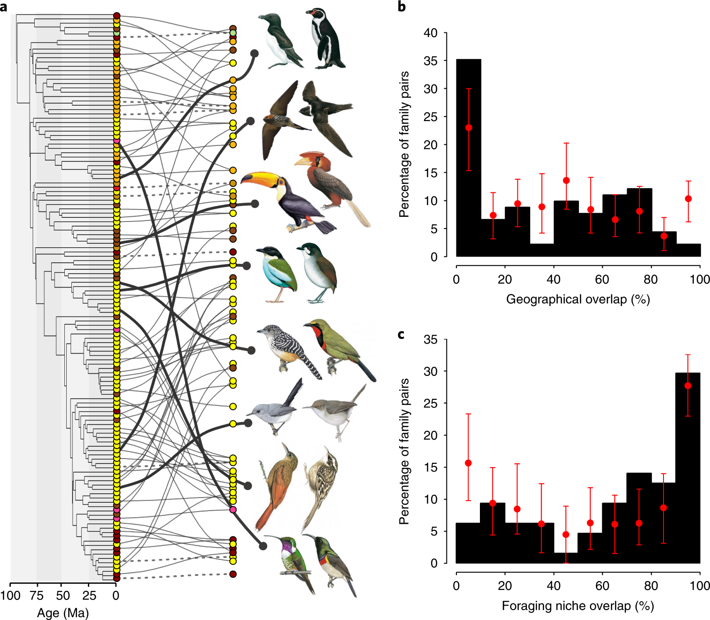

"…evolution over long time scales is utterly unpredictable and quite unrepeatable." (S. J. Gould, 1989)

What the math is for
By the end of these two lectures, you'll be able to read this sentence:
"A convergent multipeak OU model is favoured by $\Delta\mathrm{AIC}_c = 162.6$ over the non-convergent alternative; Greater Antillean anole faunas are far more similar than chance." (Mahler et al., 2013)
In English: four islands, four independent evolutionary experiments, and the same handful of lizard "ecomorphs" comes out each time. Within an adaptive radiation, convergence beats contingency.
Gould's argument was about deep-time evolution (replaying the whole history of life). An adaptive radiation unfolds over tens of millions of years in one ecological setting; it is the easier version of his question, and even here it took a lot of math to see the answer.
But first, a deeper problem stands in the way:
Are species independent data points?
No. Most of today's math is the price of fixing that.
Three tools we need to get from the question to the answer
Fit models with multiple adaptive peaks. Multivariate Ornstein–Uhlenbeck on the tree. (Next lecture.)
Decide between models. $\mathrm{AIC}_c$ on a stepwise search. (Last lecture, used again here.)
Each tool plays a specific role when we return to the lizards at the end.
What are comparative methods?
Comparing traits across species, often looking for correlations or causal relationships.
e.g., two phenotypes across multiple species
e.g., a phenotype against environment
Bridging microevolutionary processes (genetic drift, selection) with macroevolutionary patterns across the tree of life (Harmon, Ch. 1).
The field crystallised in the 1980s when Felsenstein (1985) showed that ignoring phylogenetic relatedness can lead to highly misleading conclusions.
Synthesised by Harvey & Pagel (1991) and now a core tool in evolutionary biology.
Adaptive radiations: poster children of PCMs
Caribbean anoles
Convergent ecomorphs across islands

African cichlids
Parallel morphs in Lakes Tanganyika & Malawi

Darwin's finches
Beak shape vs diet across Galápagos
Rapid diversification, often without a fossil record.
PCMs reconstruct evolutionary processes from extant species using a phylogeny.
Did some clades evolve faster? Which traits co-evolve? Does an island habitat drive the radiation?
Anolis: Jon Suh, via Quanta Magazine (2024).
Cichlids: Kuraku & Meyer (2008) Curr Opin Genet Dev 18:551–558, Fig 4.
Finches: John Gould, The Zoology of the Voyage of H.M.S. Beagle (1845), public domain.
Two possible phylogenies for 8 species
Star phylogeny: what naive regression implicitly assumes.
Resolved phylogeny: 4 pairs of close relatives.
Felsenstein, J. (1985) Am Nat 125:1–15, Figs 2 & 3.
The problem of shared ancestry
Consider 8 taxa: they may seem like 8 independent samples.
But if they fall into two clades of 4, they are more like 4 independent samples.
Treating them as independent can be misleading:
Significance tests are more likely to report significance with 8 points than 4.
Worst case: two deep lineages, each with many species.
Sample all you want: you effectively have two data points, not 40.
It doesn't matter which species you selected within each lineage.
The worst case
40 species in two deep clades of 20. How many independent data points do we really have?
Felsenstein, J. (1985) Am Nat 125:1–15, Fig 5.
An apparent correlation...
A regression of $Y$ on $X$ across 40 species. Looks significant ($P < .05$).
Felsenstein, J. (1985) Am Nat 125:1–15, Fig 6.
...is illusory
Same data, points marked by clade. The "correlation" is just a line between two clade means: effectively only 2 independent points, not 40.
Felsenstein, J. (1985) Am Nat 125:1–15, Fig 7.
Try it yourself: the correlation illusion
Two clades, no real correlation.
Within each clade, $x$ and $y$ are independent. Only the clade means differ.
Tree shape: two star clades joined at a deep root (Felsenstein's worst case). Within each clade the $n$ tips are independent draws around the clade centre; the only real signal is the contrast between the two clade means.
Increase $d$, hold $\sigma$ small: $p$ shrinks fast. But the "signal" is really just 1 between-clade contrast.
Joseph Felsenstein (1985) introduced Phylogenetically Independent Contrasts (PIC) to address non-independence.
The key insight: species on a shared phylogeny are not necessarily independent, so we must account for phylogeny in our comparative methods.
This is always a risk except when:
"characters respond essentially instantaneously to natural selection in the current environment,
so that phylogenetic inertia is essentially absent." (Felsenstein 1985)
A quick model: Brownian motion
To handle the phylogenetic dependence, PIC assumes traits evolve by Brownian motion (BM).
BM is a random walk in continuous time. After time $t$, starting at $X(0)$:
$$X(t) \sim N\!\left(X(0),\; \sigma^2 t\right)$$
Key properties:
No directional trend: the expected value stays at $X(0)$.
Variance grows linearly with time: long branches accumulate more change.
The single rate parameter $\sigma^2$ governs how fast the trait changes.
Why this works for PIC: differences between sister taxa under BM are independent draws from a normal distribution. We will return to BM in depth next lecture.
How PIC works
Under BM, pairs of sister taxa provide independent samples of evolutionary change.
Algorithm:
Take a pair of sister tips and calculate a contrast (difference in trait values).
Standardise by dividing by the square root of the sum of their branch lengths.
Prune those tips, replace with a new tip at their ancestor with an estimated trait value, and adjust its branch length.
Regression of standardised contrasts in home range on contrasts in body mass: what PIC looks like on real data. Open circles: ungulates; closed circles: carnivora.
Negative off-diagonals down-weight related species.
$\mathbf{C}$ is the central object for the rest of the lecture. The most-related pair (A, B, share 2 units) gets the largest negative entry $-5/13$ in $\mathbf{C}^{-1}$. D, unrelated to anyone, has a clean $1/3$, like a single independent sample.
Multivariate Brownian motion
PIC handles one trait at a time. What if two traits evolve together?
Multivariate BM: $r$ traits with a rate matrix $\mathbf{R}$:
$$\mathbf{R} = \begin{pmatrix} \sigma_x^2 & \sigma_{xy} \\ \sigma_{xy} & \sigma_y^2 \end{pmatrix}$$
Diagonal: per-trait evolutionary rates.
Off-diagonal: evolutionary covariance $\sigma_{xy}$ between traits.
The joint distribution of all tip values pairs $\mathbf{R}$ (how traits co-evolve) with $\mathbf{C}$ (how taxa share ancestry). For one trait at a time, the tip variance is $\sigma^2 \cdot \mathbf{C}$. For two traits, the cross-trait covariance is $\sigma_{xy} \cdot \mathbf{C}$, same shape, scaled.
$\sigma_{xy} \ne 0$ means the traits have a real evolutionary tendency to change together, beyond the patterns shared ancestry alone produces.
How do we actually use $\mathbf{V}$?
The stacked tip vector $\mathbf{d} = (X_A, \ldots, X_n, Y_A, \ldots, Y_n)^\top$ has a closed-form distribution:
$$\mathbf{d} \sim \mathrm{MVN}(\boldsymbol{0},\; \mathbf{V})$$
so we can write down the likelihood $L(\mathbf{R}, \mathrm{tree} \mid \mathbf{d})$ directly.
Estimate the rate matrix. Given a tree and the observed tips, find the $\mathbf{R}$ (the three numbers $\sigma_x^2, \sigma_y^2, \sigma_{xy}$) that maximises this likelihood. The MLE of $\sigma_{xy}$ is the estimate of evolutionary covariance.
Test for evolutionary correlation. Compare two nested models with a likelihood-ratio test:
$H_0$: $\sigma_{xy} = 0$ (independent evolution).
$H_1$: $\sigma_{xy}$ free.
One free parameter, so $\Delta \sim \chi^2_1$ (recall L11).
Simulate. Sample from $\mathrm{MVN}(\boldsymbol{0},\mathbf{V})$ to generate synthetic data under a null, or to check a fitted model.
Regress $Y$ on $X$. Take one trait as response, the other as predictor: this is PGLS (next slide), and it uses just $\mathbf{C}$, not the full $\mathbf{V}$.
Evolutionary correlation vs. spurious correlation

Each point is one species. $x$-axis: tip value of trait $X$. $y$-axis: tip value of trait $Y$.
$n = 100$ species simulated under multivariate BM on a pure-birth tree, with $\sigma_x^2 = \sigma_y^2 = 1$.
A. $\sigma_{xy} = 0$ No evolutionary covariance, but clustering by clade can still produce apparent patterns: spurious.
B. $\sigma_{xy} = +0.8$ Genuine positive co-evolution: large $X$ predicts large $Y$.
C. $\sigma_{xy} = -0.8$ Genuine negative co-evolution: large $X$ predicts small $Y$.
OLS regression picks $\beta_0, \beta_1$ to minimise $\sum_i (y_i - \beta_0 - \beta_1 x_i)^2$. Every species counts as one independent data point.
PGLS minimises the same residuals, but weighted by $\mathbf{C}^{-1}$:
$$\textstyle (\mathbf{y} - \mathbf{Z}\boldsymbol{\beta})^\top \, \mathbf{C}^{-1} \, (\mathbf{y} - \mathbf{Z}\boldsymbol{\beta})$$
where $\mathbf{Z}$ is the design matrix (column of 1s for the intercept, column of $x$-values for the slope). Closely related species share off-diagonal entries in $\mathbf{C}$; $\mathbf{C}^{-1}$ down-weights them so they count for less than one independent observation each.
Solving the minimisation gives the closed-form estimator
$$\hat{\boldsymbol{\beta}} = (\mathbf{Z}^\top \mathbf{C}^{-1} \mathbf{Z})^{-1}\, \mathbf{Z}^\top \mathbf{C}^{-1} \mathbf{y}$$
This is just standard GLS, not phylogeny-specific algebra. It is not extracting a block of $\mathbf{V}$: a single-response regression only needs $\mathbf{C}$.
Equivalence: for a single predictor under BM, PGLS gives the same slope as PIC, but also recovers an intercept.
Modern PCM software (ape, caper, phylolm) defaults to PGLS-style frameworks.
Generate $(x,y)$ at the tips under multivariate BM with rate matrix $\mathbf{R}$.
PGLS computed via Felsenstein's contrasts (equivalent under BM).
Set $\sigma_{xy} \approx 0$, hit re-sample several times: OLS often shows a strong slope just from shared ancestry.
PCMs in the wild: three case studies
PIC
Home range vs. body mass in mammals
49 mammal species. After contrasts, home range still scales with body mass, but with a shallower slope than naive regression suggested.
$\Rightarrow$ phylogeny inflated the apparent scaling exponent.
Garland, Harvey & Ives (1992) Syst Biol 41:18.
MULTIPEAK OU
Anolis ecomorph convergence on four islands
100 Anolis species, 11 traits $\to$ 4 pPC axes. A multipeak OU model fit by stepwise AIC identifies convergent peaks in trait-space across the four Greater Antilles islands.
$\Rightarrow$ adaptive radiation reproduces similar morphs again and again. See next slides.
Mahler et al. (2013) Science 341:292.
CONVERGENCE AT SCALE
Form maps to function across 9,963 birds
9 traits across >99% of extant birds $\to$ 4-D morphospace. Bayesian phylogenetic analysis recovers 91 phenotypically matched family pairs (e.g. toucans & hornbills) that are geographically disjunct: convergence, not shared ancestry.
$\Rightarrow$ Same kind of question, different machinery, vertebrate-class scale.
Pigot et al. (2020) Nat Ecol Evol 4:230.
Common thread: each study would have given a misleading answer with naive (non-phylogenetic) analysis.
PIC / PGLS: assumptions and limitations
Assume traits evolve by Brownian motion. How reasonable is this?
Beyond-BM models (OU, early burst, $\lambda$) relax this. See next lecture.
Assume the phylogeny is known without error (topology and branch lengths).
For PGLS regression: assume the predictor is fixed, not evolving. Often violated for trait-vs-trait questions.
Despite limitations, PIC/PGLS were foundational advances:
Showed that ignoring phylogeny can lead to seriously misleading conclusions.
Opened the field of phylogenetic comparative methods.
Spotlight: convergence on the macroevolutionary landscape
Setup. 100 of 119 Anolis species across Cuba, Hispaniola, Puerto Rico, and Jamaica. 11 ecomorphological traits $\to$ 4 phylogenetic PC axes. MCC tree from a BEAST analysis of mtDNA.
Old story. Each island has the same handful of named ecomorphs (twig, grass-bush, trunk-crown…): convergence among matched species.
New question. When you include the "unique" species too (~20% of the fauna), are entire island radiations still more similar than chance?
Why we care. The paper combines two threads from this session: a multivariate, multi-peak trait model (this lecture) and stepwise AICc model comparison (last lecture).
The Hansen model: a multi-peak OU on the tree
Each lineage evolves under an Ornstein–Uhlenbeck process:
$$dX = \alpha(\theta - X)\,dt + \sigma\,dW$$
BM noise $\sigma^2$, pulled toward an optimum $\theta$ with strength $\alpha$. (We meet OU properly in the next lecture.)
Multi-peak twist. Paint the branches of the tree with regimes. Each regime has its own $\theta_i$, an adaptive peak in trait space.
Parameters: $\sigma^2$, $\alpha$, and $\theta_1,\ldots,\theta_{k'}$. With $m$ traits, each $\theta_i$ is an $m$-vector; this is the multivariate piece.
Captures Simpson's "adaptive zones" mathematically: lineages that share a regime are pulled toward the same point on the landscape.
SURFACE: stepwise AICc on the landscape
Problem. Where do the peak shifts go on the tree? How many peaks? Which shifts are convergent? Too many possibilities to enumerate.
SURFACE (Ingram & Mahler 2013) is a two-phase stepwise AICc search, the same logic as L11 applied to the multi-peak OU model:
Forward phase. Start from a single-peak OU. At each step, try placing a new shift on every branch; keep the placement that lowers AICc the most. Stop when nothing helps.
Backward phase. Try collapsing every pair of peaks into a single shared peak (= convergence). Each collapse removes $m$ optimum parameters, so AICc can improve even though the log-likelihood cannot.
Crucially, ecomorph labels are not used as input. Any convergence the method finds is data-driven.
Parameter count for $k$ shifts and $k'$ distinct peaks: $\,k + (k'+2)\,m$. Forward phase has $k'=k$; backward phase drives $k' < k$.
The result: AICc picks a convergent landscape

Mahler et al. (2013) Science 341:292, Fig 2. Branches and islands coloured by adaptive peak; solid lines connect convergent peaks reached from multiple islands.
Final SURFACE model vs alternatives ($\Delta\mathrm{AIC}_c$)
single-peak OU
340.4
BM / EB / time / lineage‑diversity (no peaks)
$\geq 279.3$
non-convergent multipeak (forward phase only)
162.6
Each row: $\Delta\mathrm{AIC}_c$ above the final convergent model. Larger $\to$ more strongly rejected. (Supp. fig. S2)
29 peak shifts collapsed to 15 distinct peaks.
22 / 29 (76%) shifts are convergent.
7 / 8 convergent peaks span more than one island.
Endemic "unique" peaks occur only on the two largest islands: an area effect.
Is evolution repeatable? Within this adaptive radiation (30–50 Myr, one ecological setting), $\Delta\mathrm{AIC}_c = 162.6$ says yes. Gould's deeper claim (replay the entire tape of life) is not what this number tests; it is the easier version of the question, and the formal answer required every tool in today's lectures.
And at scale: 9,963 birds, same logic

Pigot et al. (2020) Nat Ecol Evol 4:230, Fig 4. (a) Lines connect 91 phenotypically matched family pairs across the avian tree. (b, c) Matched pairs are predominantly geographically disjunct and ecologically similar.
Data. 9 morphological traits for 9,963 bird species ($>99\%$ of extant birds, all 233 families). $\to$ 4-D morphospace.
Method. BAMM (reversible-jump Bayesian MCMC over trait-rate regimes) + random-forest niche prediction + Monte-Carlo tests against a phylogenetic null.
Result. 91 family pairs reach the same region of morphospace from independent origins, typically in disjunct biogeographical realms: toucans (Neotropics) and hornbills (palaeotropics); antpittas and pittas; swifts and swallows.
Same question, different methods. Mahler picks among competing OU models by $\mathrm{AIC}_c$. Pigot fits a Bayesian rate-shift model and tests convergence against a simulated null. Statistically comparing competing evolutionary hypotheses is genuinely hard, and methods continue to evolve.
Discussion
Can you imagine a situation where "phylogenetic inertia is essentially absent"?
How reasonable is the assumption that traits evolve by Brownian motion?
You are studying the surface proteins of a human pathogen. The primary selective force is for them to look different from generation to generation. Is PIC appropriate here?
In the OLS-vs-PGLS demo, when $\sigma_{xy}=0$ but you still see a non-zero OLS slope: where is that signal coming from?
In Mahler et al., the convergent landscape beats a non-convergent multipeak model by $\Delta\mathrm{AIC}_c = 162.6$. The two models use the same shift placements, so what is the convergent model trading off to win, and why does AICc reward it?